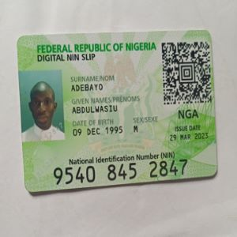

Profile Summary
I am a passionate and versatile professional with expertise in UX design, frontend development, and
game design/development using Unity. With a strong foundation in user-centered design principles and
a keen eye for aesthetics, I am dedicated to creating immersive, engaging, and intuitive digital
experiences for users. My multidisciplinary skills allow me to seamlessly bridge the gap between
design and development, resulting in cohesive and impactful products.
Skills:
- UX Design: User research, wireframing, prototyping, user personas, customer journey mapping,
information architecture, Sketch, Adobe XD, Figma
- Frontend Development: HTML5, CSS3, JavaScript, React, Angular, responsive design, cross-browser
compatibility, web performance optimization
- User Interface (UI) Design: Layouts, typography, color schemes, iconography, high-fidelity mockups,
Adobe Photoshop, Adobe Illustrator
- Interaction Design: Motion design, animations, CSS3, GSAP
- Usability Testing: Planning, conducting, and analyzing usability testing sessions, test scenarios,
user feedback analysis
- Game Design: Game mechanics, player progression, narratives, level design, Unity Playmaker, Unreal
Engine Blueprints
- Unity Development: C# scripting, asset integration, particle systems, physics simulations, game
performance optimization, game analytics
- Version Control: Git, GitHub, branching, merging, conflict resolution
- Agile Development: Scrum, sprint planning, cross-functional collaboration
professional Experience:
-
UX Designer | JawaaTech Solutions
- Conducted user research, created wireframes, and designed interactive prototypes for web and
mobile applications.
- Collaborated closely with cross-functional teams, including developers and stakeholders, to
ensure seamless implementation of design solutions.
- Conducted usability testing sessions and incorporated feedback to iterate and improve the
user experience.
-
Frontend Developer | Techopus
- Developed responsive websites and web applications using HTML, CSS, and JavaScript
frameworks.
- Collaborated with designers and clients to translate design concepts into functional and
visually appealing user interfaces.
- Optimized websites for performance, accessibility, and search engine optimization (SEO).
-
Game Designer and Unity Developer | Jawaa Game Startup
- Designed and developed immersive and engaging gameplay experiences using Unity.
- Created game mechanics, implemented level design, integrated assets, and scripted
interactive elements.
- Collaborated with artists and sound designers to ensure a cohesive and captivating game
experience.
Education:
- Google UX Design Professional Certificate
- User Interface Design | University of Minnesota
- Interaction Design | USC San Diego
- Meta Frontend Development Specialization
- Unity Junior Programming Pathway
- Unity Core
portfolio:
Website: portfolio link
I am passionate about creating meaningful and memorable experiences for users through my skills in UX design, frontend development, and game design/development. I thrive in collaborative environments and I'm always eager to take on new challenges. Feel free to explore my portfolio to see examples of my work and reach out to me for any potential opportunities or collaborations.